文档
Word 式功能区（开始 / 插入 / 绘图 / 设计 / 布局 / 引用 / 审阅 / 视图），格式刷与选择性粘贴， 中西文分设字体，图片裁剪、去背景与旋转翻转，查找替换、字数统计、缩放与阅读模式； 保存走段落级补丁，未编辑的内容原样保留。
本地优先 · 开源 · 无账号
原生读写 Word、Excel、PPT、PDF 与 Markdown 的桌面 Office 套件。
双击就开，断网不少一个功能
—— 不登录、不上传、无广告。
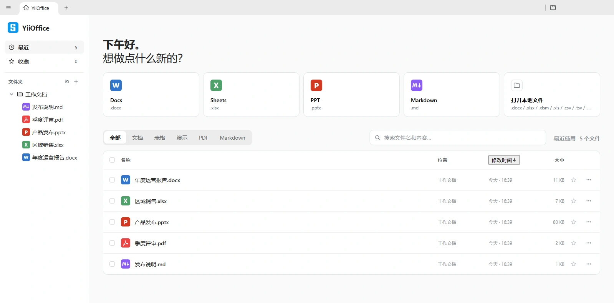
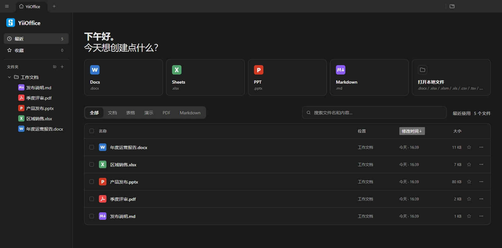
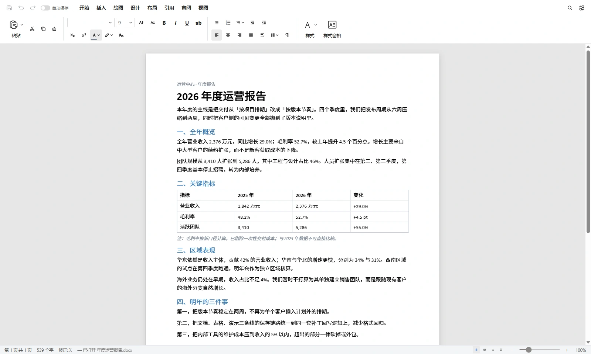
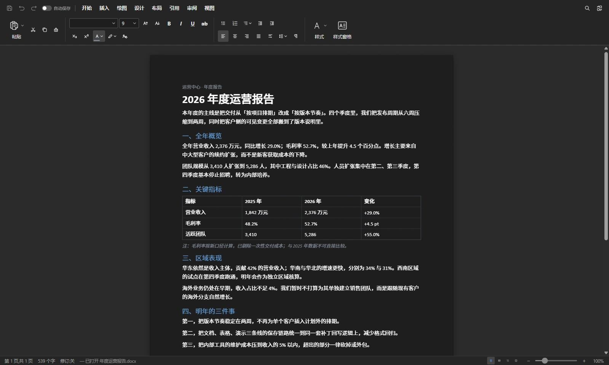
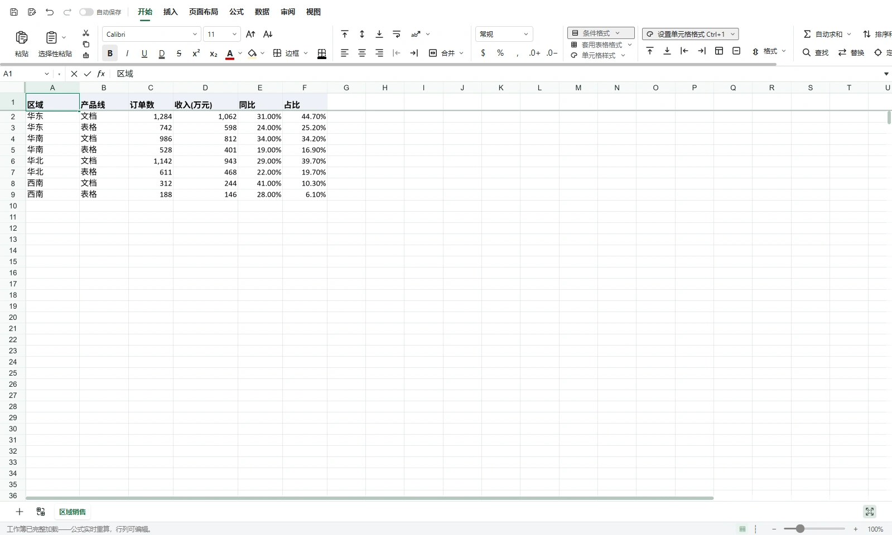
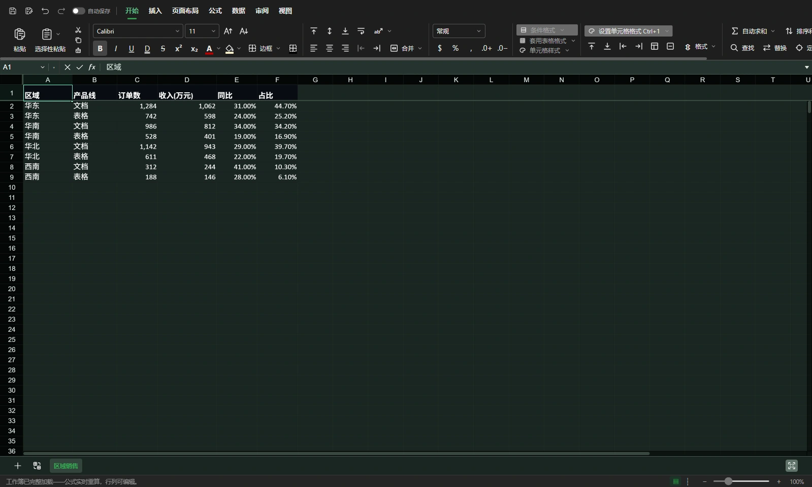
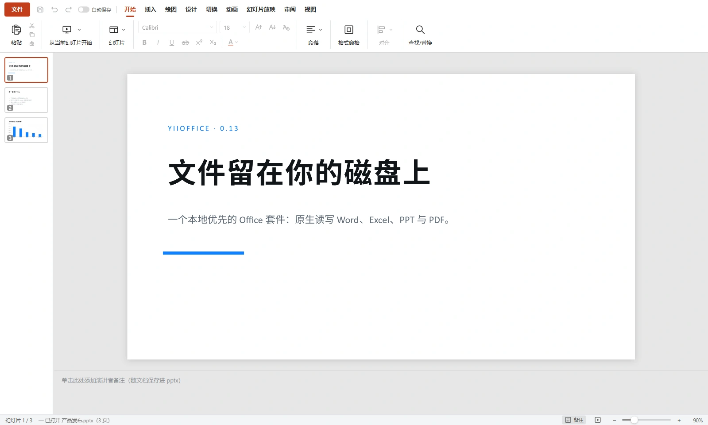
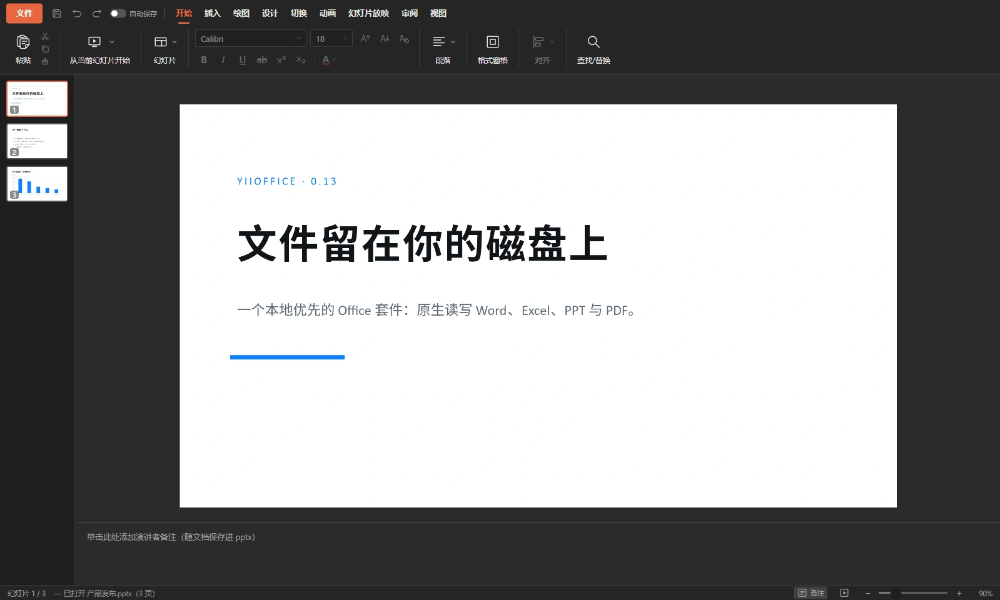
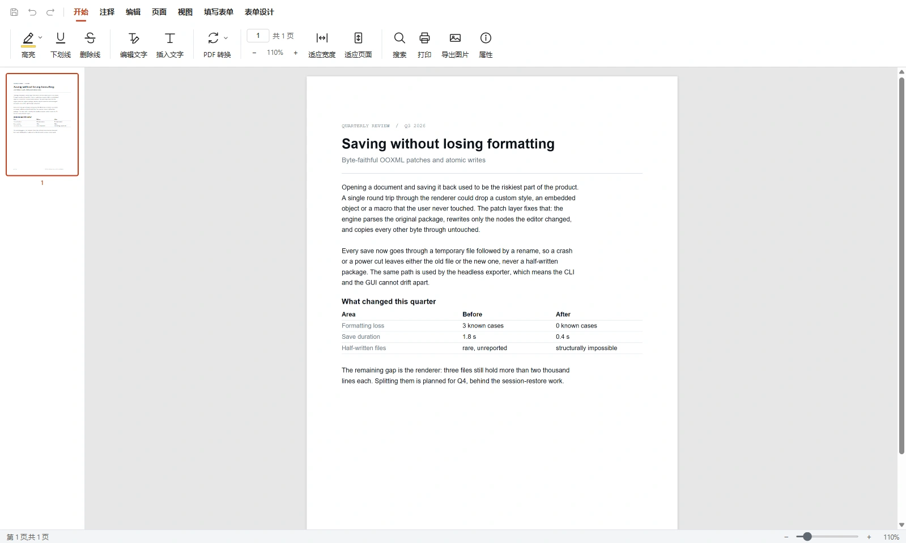
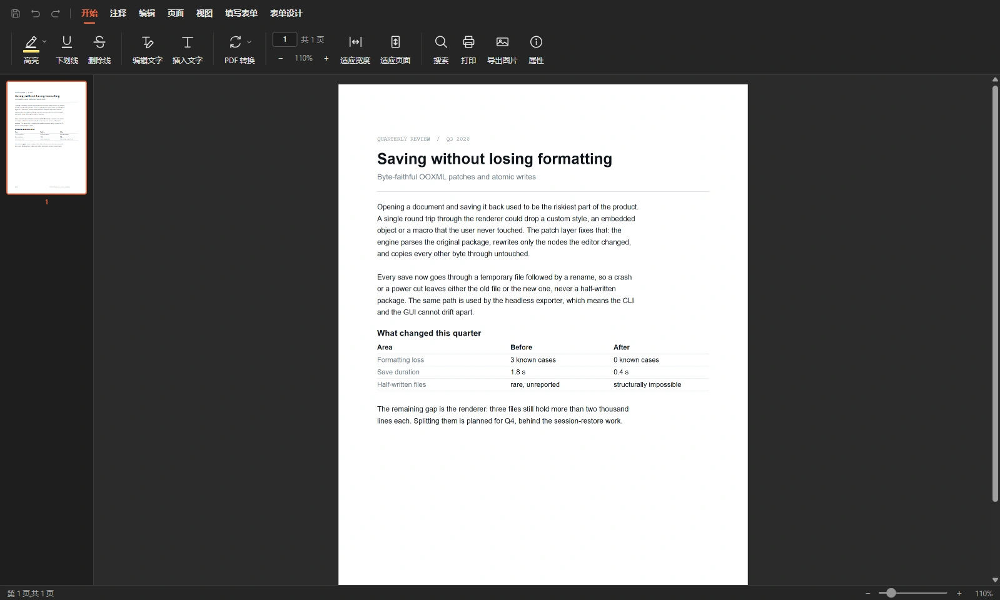
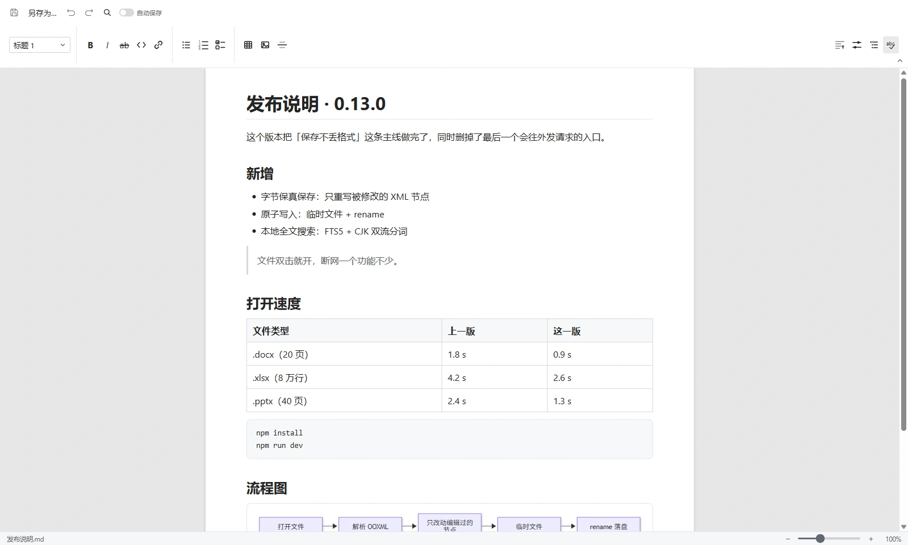
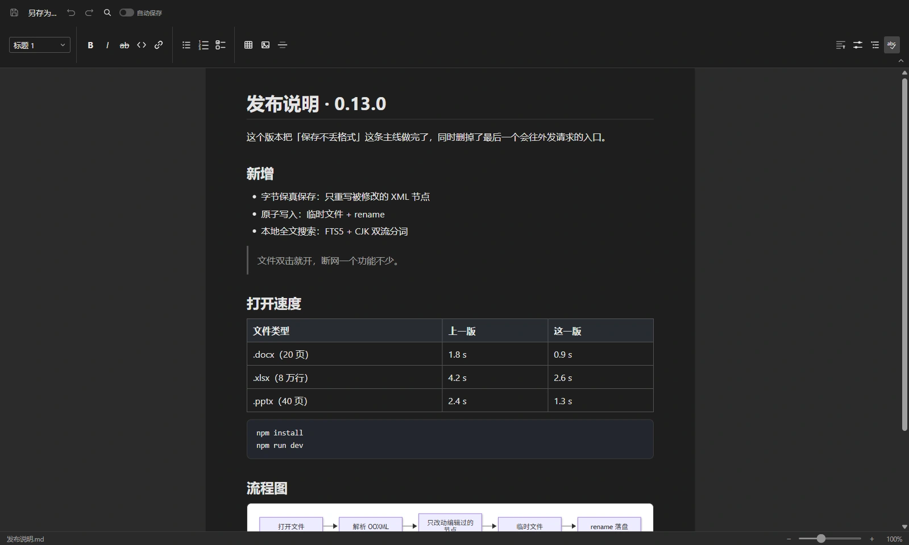
编辑器
每个编辑器都作为标签页挂在同一个工作台里，由 Go 侧标签宿主统一托管。切换标签只做显示与隐藏 —— 滚动位置、光标和撤销栈都原样留着。
Word 式功能区（开始 / 插入 / 绘图 / 设计 / 布局 / 引用 / 审阅 / 视图），格式刷与选择性粘贴， 中西文分设字体，图片裁剪、去背景与旋转翻转，查找替换、字数统计、缩放与阅读模式； 保存走段落级补丁，未编辑的内容原样保留。
公式与函数库、条件格式、数据验证、排序筛选、表格、批注与绘图，查找替换一应俱全； 读写与保存经 Go 侧 OOXML 补丁网关（excelize），存完 Office 照常打开。
功能区式编辑（插入 / 绘图 / 设计 / 切换 / 动画 / 放映 / 审阅），文本、形状、图片与表格编辑， 切换与动画效果；EMU→px 高保真渲染，元素级补丁保存，只重写被改动的节点。
查看与导航（缩略图、跳页、缩放、适应模式）；页面操作：合并、拆分、提取页面、插入 PDF、 替换页面、N-up、网格切分、裁剪、设置页大小、导出页面图片、插入空白页。 批注与内容流编辑超出引擎边界，对应入口直接隐藏，不放点了报错的按钮。
所见即所得与源码双视图，表格、代码块、图片都能用；Mermaid 图表与 KaTeX 公式直接渲染， JSON 与纯文本也有各自的编辑模式。
Docs / Sheets / Slides / Markdown 可导出 PDF，Docs 另可导出 HTML 与 DOCX；
命令行 --headless-export 不弹窗口完成转换，--json
输出一行结构化结果，全部在本机进行，不上传、不消耗额度。
编辑、保存、搜索、格式转换全部在本机跑。默认的出网行为只有一处：加载文档里引用的网络图片； 更新检查也不自动发起，只在设置里手动触发。
走 OOXML 补丁回写，只重写被改动的那几个节点，其余字节保持原样。样式、批注、嵌入对象与宏 都留着，存完用 MS Office 或 WPS 照常打开。
不用注册、不收集使用数据，界面里没有藏着的付费入口； 引擎给不了的功能直接移除入口，而不是留下点了报错的按钮 —— 主界面上就是你自己的文件列表。
通用能力
保存不坏文件、崩溃不丢内容、搜索能命中中文 —— 这些不显眼的地方，才是每天真正依赖的部分。
所有落盘都走「临时文件 + rename」，崩溃或断电不会留下半个损坏的文件。
Go 侧 SQLite（FTS5）索引，覆盖文件名、路径与正文；中文走 bigram + unigram 双路分词， 两字词也能命中长串；fsnotify 以 400ms 去抖做增量更新，文件夹增删实时联动，无需重启。
标签由 Go 侧统一托管，切换只做显示与隐藏，编辑器状态整份保留；标签可分离为独立窗口，关闭前有未保存拦截。
--headless-export 不弹窗口就能转 PDF，--json
输出一行结构化结果，方便脚本与批处理调用。
zip-gate 在解包前拒绝解压体积超出声明值的压缩包，
DOCX / PPTX 引擎共用同一道防线。
-tags server 构建纯 HTTP 服务（无 GUI，默认 8080 端口），可打包为
distroless 镜像部署；同一套代码，桌面与服务两种形态。
技术栈
快速开始
go install github.com/wailsapp/wails/v3/cmd/wails3@v3.1.0
安装 wails3 CLI；安装包与便携版均随附 SHA-256 校验文件。
# 安装前端依赖（monorepo 一次装完） cd frontend && npm install && cd .. # 生成 bindings、拉起 Vite dev server（:5178）、热重建并运行应用 wails3 dev
# 生产构建（build/bin/YiiOffice.exe） task build # NSIS 安装包 + SHA-256 校验文件（dist/） task package:windows # 服务器模式二进制 / distroless Docker 镜像 task build:server task build:docker
# 后端：静态检查与单元测试 go vet ./... go test ./internal/... # 前端：类型检查、单元测试、全量构建 npm --prefix frontend run typecheck npm --prefix frontend test npm --prefix frontend run build # E2E：Playwright 驱动真实 Go 后端（server 构建） task e2e
@yiioffice/i18n。
常见问题
unicode61 不切分连续中文，所以索引额外产出 bigram 与
unigram 两路 token，两字词和单字查询都能命中。
task build:server 或 task build:docker 产出 HTTP 服务形态，
默认监听 8080；绑定到非回环地址时启动会告警，请置于可信网络或反向代理之后。
wails3 dev 起来了，编辑器标签却白屏？wails3 dev 即可拉起。
代码、组件拆分与构建脚本都在仓库里，没有隐藏的付费模块。想加一个编辑器、换一套配色、 或者把某个格式的读写做得更准，都可以直接动手。